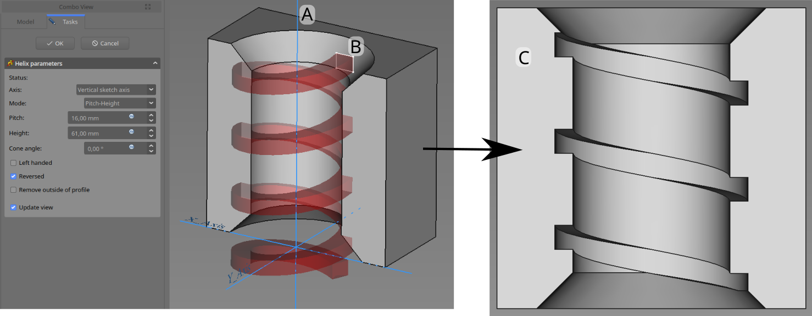
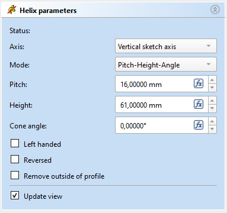

PartDesign SubtractiveHelix/it
|
|
| Posizione nel menu |
|---|
| Part Design → Crea una funzione sottrattiva → Elica sottrattiva |
| Ambiente |
| PartDesign |
| Avvio veloce |
| Nessuno |
| Introdotto nella versione |
| 0.19 |
| Vedere anche |
| Elica additiva |
Descrizione
Lo strumento Elica sottrattiva modifica un solido spostando uno schizzo selezionato o un oggetto 2D lungo un percorso elicoidale asportando il materiale.
{kind=link}

Il profilo (B), viene trascinato attorno all'asse (A) in modo da realizzare la scanalatura elicoidale (C) nel pezzo preesistente
Utilizzo
- Selezionare lo schizzo da trascinare nell'elica. In alternativa è possibile utilizzare una faccia del solido esistente.
- Esistono diversi modi per richiamare lo strumento:
- Premere il pulsante
 Elica sottrattiva.
Elica sottrattiva. - Selezionare l'opzione Part Design → Crea una funzione sottrattiva → Elica sottrattiva dal menu.
- Premere il pulsante
- Impostare i parametri dell'elica (vedere la sezione successiva).
- Verificare l'elica nella finestra della vista, per garantire che i parametri non risultino in un'elica autointersecante.
- Cliccare su OK.
Opzioni
Quando si crea un'Elica sottrattiva, la finestra di dialogo Parametri dell'elica offre diversi parametri che specificano come deve essere fatto scorrere lo schizzo.
{kind=link}

Asse
Questa opzione specifica l'asse attorno al quale lo schizzo deve essere spostato.
- Asse normale allo schizzo: seleziona la normale dello schizzo che attraversa l'origine dello schizzo come asse. disponibile dalla versione 0.20
- Asse verticale dello schizzo: seleziona l'asse verticale dello schizzo.
- Asse orizzontale dello schizzo: seleziona l'asse orizzontale dello schizzo.
- Linea di costruzione: seleziona una linea di costruzione contenuta nello schizzo utilizzato dall'Elica. L'elenco a discesa conterrà una voce per ciascuna linea di costruzione. La prima linea di costruzione creata nello schizzo verrà etichettata Linea di costruzione 1.
- Asse (X/Y/Z) di Base: seleziona l'asse X, Y o Z dell'Origine del Corpo;
- Seleziona riferimento...: consente la selezione nella vista 3D di un bordo sul Corpo, o di una linea di riferimento.
Modalità
Questo indica quali parametri verranno utilizzati per definire l'elica. Le scelte sono:
- Passo-Altezza-Angolo: definisce tramite il passo e l'altezza complessiva
- Passo-Numero giri-Angolo: definisce tramite il passo e il numero di giri
- Altezza-Numero giri-Angolo: definisce tramite l'altezza totale e il numero di giri
- Altezza-Numero giri-Crescita disponibile dalla versione 0.20: definizione tramite l'altezza totale, il numero di giri e la crescita del raggio dell'elica. Quindi un'altezza pari a zero porta ad un percorso a forma di spirale. Un'altezza e una crescita pari a zero creano una figura a forma di cerchio.
Passo
La distanza tra le spire dell'elica.
Altezza
La lunghezza dell'elica (centro-centro).
Numero giri
Il numero di giri dell'elica. Definiti come Altezza/Passo
Angolo cono
Angolo del cono che forma un avvolgimento attorno all'elica. Intervallo consentito: [-89°, +89°].
Sinistrorsa
Se selezionato, la direzione di rotazione dell'elica viene invertita da quella predefinita in senso orario a quella antioraria.
Invertita
Se selezionato, la direzione dell'asse dell'elica viene invertita rispetto a quella predefinita.
Rimuovi fuori dal profilo
Se selezionata, il risultato sarà l'intersezione del profilo spazzato e del corpo preesistente.
Aggiorna la vista
Se selezionato, l'elica verrà mostrata nella vista e aggiornata automaticamente ad ogni modifica dei parametri.
Proprietà
- DatiPitch: La distanza assiale tra due spire.
- DatiHeight: La lunghezza totale dell'elica (esclusa l'estensione del profilo)
- DatiTurns: Il numero di giri (non è necessario che sia un numero intero)
- DatiLeft Handed: Vedere Sinistrorsa.
- DatiReversed: Vedere Invertita.
- DatiAngle: L'inclinazione con cui il raggio dell'elica aumenta lungo l'asse. Intervallo consentito: [-89°, +89°].
- DatiReference axis: L'asse dell'elica
- DatiMode: La modalità di input dell'elica (altezza e passo, spire e passo, altezza e giri)
- DatiOutside: Se vero, il risultato sarà l'intersezione del profilo spazzato e del corpo preesistente.
- DatiHas Been Edited: Se falso, lo strumento proporrà un valore iniziale per il passo in base al riquadro di delimitazione del profilo, in modo da evitare l'autointersezione.
- DatiRefine: vero o falso. Se impostato su true, pulisce il solido dai bordi residui lasciati dalle lavorazioni. Per ulteriori dettagli, vedere Affina forma.
- DatiProfile: Uno schizzo contenente un contorno chiuso o una faccia.
- DatiMidplane: Non usato.
- DatiUp to face: Non usato.
- DatiAllow multiple face: Non usato.
Note
- Helper tools: New Body, New Sketch, Attach Sketch, Edit Sketch, Validate Sketch, Check Geometry, Sub-Shape Binder, Clone
- Modeling tools:
- Additive tools: Pad, Revolution, Additive Loft, Additive Pipe, Additive Helix, Additive Box, Additive Cylinder, Additive Sphere, Additive Cone, Additive Ellipsoid, Additive Torus, Additive Prism, Additive Wedge
- Subtractive tools: Pocket, Hole, Groove, Subtractive Loft, Subtractive Pipe, Subtractive Helix, Subtractive Box, Subtractive Cylinder, Subtractive Sphere, Subtractive Cone, Subtractive Ellipsoid, Subtractive Torus, Subtractive Prism, Subtractive Wedge
- Boolean: Boolean Operation
- Dress-up tools: Fillet, Chamfer, Draft, Thickness
- Transformation tools: Mirror, Linear Pattern, Polar Pattern, Multi-Transform, Scale
- Additional tools: Shape Binder, Involute Gear, Sprocket, Shaft Design Wizard
- Context menu: Suppressed, Set Tip, Move Object To…, Move Feature After…
- Preferences: Preferences, Fine tuning
- Getting started
- Installation: Download, Windows, Linux, Mac, Additional components, Docker, AppImage, Ubuntu Snap
- Basics: About FreeCAD, Interface, Mouse navigation, Selection methods, Object name, Preferences, Workbenches, Document structure, Properties, Help FreeCAD, Donate
- Help: Tutorials, Video tutorials
- Workbenches: Std Base, Assembly, BIM, CAM, Draft, FEM, Inspection, Material, Mesh, OpenSCAD, Part, PartDesign, Points, Reverse Engineering, Robot, Sketcher, Spreadsheet, Surface, TechDraw, Test Framework
- Hubs: User hub, Power users hub, Developer hub